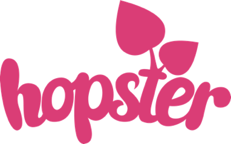
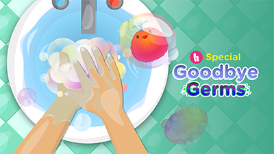

COVID-19: HOPSTER RESPONDS WITH EXTENDED FREE TRIALS & NEW ORIGINAL CONTENT
BRAND NEW: ENVIRONMENTAL ORIGINAL SHOWS TO SUPPORT EARTH DAY -
London, 25 March 2020 – Hopster, the award-winning preschool educational and entertainment digital platform that develops young children’s learning through kids TV shows, music, games and books has announced that it is extending its trial period to 30 days and commissioned a raft of short form original content to support families during the COVID-19 pandemic.
Hopster Studios has commissioned the following #GoodbyeGerms content that will be available for free on its Youtube channels and across their partner platforms around the world:
Further commissions and acquisitions are currently also in development. Over the next few weeks, parents and caregivers will also find a range of parent-child activities and tips on the Hopster Blog and via its Twitter channel.
From 1st April as part of its new monthly theme for April - The environment. Hopster has commissioned a brand new mini documentary series Kids Who Save the World and acquired a number of preschool-friendly eco-rap songs from Mr Eco. The theme aims to support Earth Day in a meaningful way through curated-themed content to inspire little ones to think about ways they can be green and reduce their impact on the planet.
Kids Who Save the World is an original live action series by Hopster Studios (5 x 4mins) produced by No Ordinary Pictures - that follows five children who share their love of nature and what they do to look after the environment.
A UK, Ireland and ANZ SVOD exclusive - Hopster has also acquired 14 songs environmental focused rap songs from Mr Eco, which have been edited to be preschool friendly: (1) Litterbug, (2) EcoHero Anthem, (3) Save Some For The Fishes, (4) Straw Wars, (5) Recycle Robot, (6)Bottles Are For Babies, (7) Oh So Solar, (8) Sort Like Crazy, (9) Ugly Food, (10) Compost King, (11) Power Shower, (12) Bag Monster, (13) Green Careers, (14) Dates on Food
Other environmentally shows that are also available include: Through the Woods (10 x 3’), The Hive (26 x 7’) and Earth to Luna (15 x 12’).
Watch Episode 1 of Kids Who Save the World: Click HERE
Watch Mr Eco’s Power Shower: Click HERE
For general Hopster images and logo: Click HERE
Hopster is available on iOS and Android from the App Store and Google Play
Kids Who Save the World Images: CickHERE
For more information please contact:
About Hopster – www.hopster.tv
Hopster is a beautifully designed app for the under-sixes, aiming to strike the perfect balance between learning and fun. For one low monthly subscription with no tie-ins, Hopster subscribers get access to a large selection of kid’s TV shows, stimulating learning games, nursery rhymes and music.
Hopster is trusted by millions of parents worldwide to keep their kids amazed with fun educational content in a safe and ad-free environment. It has topped the App Store charts in over 36 countries, was named Best Streaming Video Platform for preschoolers by Kidscreen as has received a channel nomination at the Children’s BAFTA in 2019 and 2018.
Hopster can be downloaded free from the App Store and Google Play and can be found on selected smart TVs such as Amazon Fire TV, EE TV and Roku in the UK, Roku Channels, Comcast Xfinity, DISH and Sling TV in the US and on many other platforms around the world.
About Hopster Studios Productions
Established in 2017, Hopster Studios Productions is a subsidiary of Hopster. The company produces preschool content which includes award-winning animated TV shows, songs and games. Its content includes animated TV shows Two Minute Tales, Saturday Club, Clever Brenda and Rainbow Stories; App Games: Hopster Coding Safari and Hopster Saturday Club; Music: Hopster Jam songs ad LGBT+ themed Love is Love.